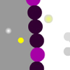
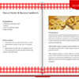
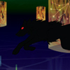

6/2009 - 9/2009
6/2010 - 9/2010 |
Flash Developer |
| |
- - 35 hours / week
- - Created my own production timelines and scheduled appropriate deadlines so that by the end of each summer I would to generate results useful to the organization
- - Produced simple simulations and animations to help students visualize complex processes and concepts
- - Collaborated with professors, high school teachers and students to balance entertainment and educational value for educational stakeholders
- - Developed 4 educational Flash games using Flash CS4 and ActionScript 3.0 to support the organization’s Nanotechnology teaching modules
|
 |
Nanobomber - A game aimed at high school students about nanoscale drug-delivery by mimicking the real-world process of designing nanomedicine and simulating the effect of releasing it into the bloodstream; showcased in the National Nanotechnology Initiative at Ten: Nanotechnology Innovation Summit in Washington, DC on Dec 8-10, 2010. (2-person project, contributed 3000 lines of ActionScript 3.0 code) |
|
Sammy the Superscaler in 'The Great Scale Adventure' - A game meant to teach middle school students about size and scale by putting the player in environments at certain scales and having them remove the objects that do not belong at that scale. This is the first of two games meant to support the MRI's 'Size and Scale' lesson module. (solo project, 3000 lines of ActionScript 3.0 code) |
|
Sammy the Superscaler in 'The Superscaler Sorting Factory' - A game meant to teach middle school students about size and scale by having the player sort a collection of objects passing by on a conveyor belt into eight different scales, denoted by metric prefixes. This is the second of two games meant to support the MRI's 'Size and Scale' lesson module. (solo project, 1900 lines of ActionScript 3.0 code) |
|  |
How a Dye Sensitized Solar Cell Works - An animated slideshow with a supplemental game to help high school students understand the basic processes that occur within a dye sensitized solar cell. (2-person project, contributed 1800 lines of ActionScript 3.0) |
|
|
9/2009 - 6/2010
9/2010 - 3/2011 |
Assistant Interactive Editor, Freelance Producer |
| |
- - 15-25 hours / week
- - Trained producers individually on creating interactive graphics to complement reporting in order to facilitate the producers' autonomy
- - Taught Flash and ActionScript tutorial sessions on a weekly basis
- - Designed and produced interactive pieces on a weekly basis, such as:
|
 |
Cops vs. Streakers
NBN's first video game, where you can play as a cop and catch streakers or play as a streaker and try to outrun the cops; the game was meant to supplement a story where several students were arrested for streaking across campus (4 person project, contributed 1100 lines of ActionScript 3.0 code) |
 |
NBN's Guide to the Red Line
An interactive guide about what to do, where to eat, and where to shop at every stop on the CTA Red Line from Howard to Lake (3 person project, contributed 1000 lines of ActionScript 3.0 code) |
 |
NBN's Bike Guide
Another interactive guide created for Northwestern students with information about how to get a bike, where to ride it, and how to prepare for the ride. (4 person project, contributed 300 lines of ActionScript 3.0 code) |
|  |
NBN's Breakfast Guide
An interactive compilation of a writer's favorite breakfast recipes with additional functions to filter the recipes by taste or ingredients. (solo project, 250 lines of ActionScript 3.0) |
|
|
| |
Projects Relevant to Game Design |
 |
blink - a 2D platforming game engine for Flash; includes physics, gesture recognition, collision detection between rectangular objects with any rotation, and a tile-based level editor with different layers of depth and the ability to import images; an ongoing project. (solo project, 6700 lines of ActionScript 3.0 for level editor and player) |
|
The Dark Lord's Apprentice - A variation on the tower-defense genre; the player can summon minions to the field or on top of the tower to defend themselves against enemies, or create trails of flames on the field to incinerate enemies; as the player levels up, they can summon new types of minions with different abilities and attack patterns. (4-person group project, contributed 3200 lines of C# code myself, using the XNA Game Studio library) |
|  |
re: Little Red Riding Hood - A venture into a new method of story-telling, which I call Stack Comics; the story for this Stack Comic is a reinvention of the old fable of Little Red Riding Hood. (solo project, 1000 lines of ActionScript 3.0 for Stack Comic editor and player; 70 hand-drawn panels, edited using Adobe Illustrator) |
 |
Breeze - An artistic game where up to two players can each control a fan which can be used to keep various floating objects aloft, such as leaves, snowflakes, flower petals, and cinders; blowing puffs of air at these objects will cause a sound to play and may cause the environment to change. The game's emphasis is on playing, rather than winning. (solo project, 500 lines of ActionScript 3.0 code) |
|
|